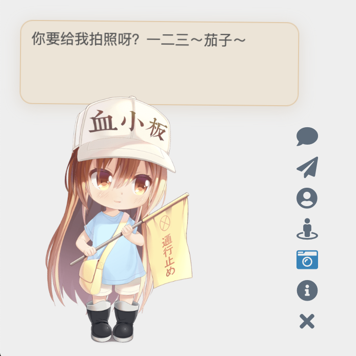
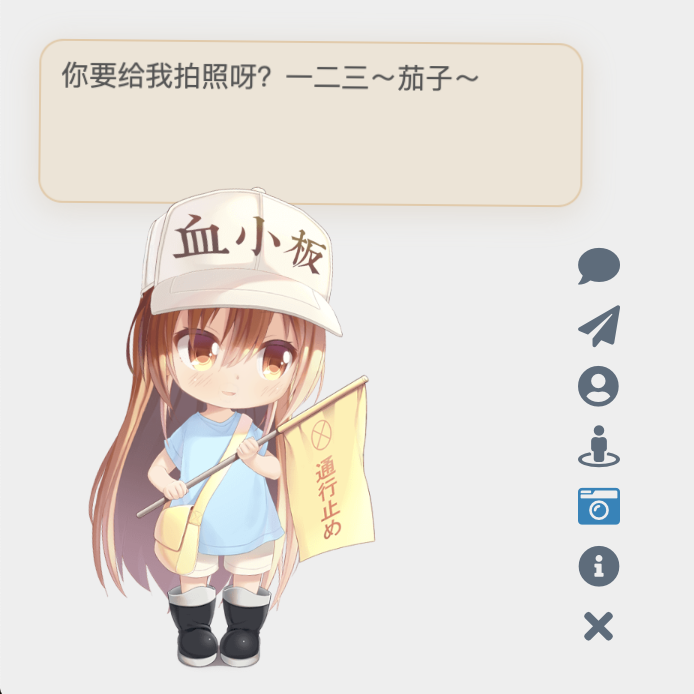

Live2D Widget


特性
在网页中添加 Live2D 看板娘。兼容 PJAX，支持无刷新加载。
 

（注：以上人物模型仅供展示之用，本仓库并不包含任何模型。）
你也可以查看示例网页：
- 在 米米的博客 的左下角可查看效果
- demo.html，展现基础功能
- login.html，仿 NPM 的登陆界面
使用
如果你是小白，或者只需要最基础的功能，那么只用将这一行代码加入 html 页面的 head 或 body 中，即可加载看板娘：
1 | |
添加代码的位置取决于你的网站的构建方式。例如，如果你使用的是 Hexo，那么需要在主题的模版文件中添加以上代码。对于用各种模版引擎生成的页面，修改方法类似。
如果网站启用了 PJAX，由于看板娘不必每页刷新，需要注意将该脚本放到 PJAX 刷新区域之外。
但是！我们强烈推荐自己进行配置，让看板娘更加适合你的网站！
如果你有兴趣自己折腾的话，请看下面的详细说明。
配置
你可以对照 autoload.js 的源码查看可选的配置项目。autoload.js 会自动加载三个文件：waifu.css，live2d.min.js 和 waifu-tips.js。waifu-tips.js 会创建 initWidget 函数，这就是加载看板娘的主函数。initWidget 函数接收一个 Object 类型的参数，作为看板娘的配置。以下是配置选项：
| 选项 | 类型 | 默认值 | 说明 |
|---|---|---|---|
waifuPath |
string |
https://fastly.jsdelivr.net/gh/stevenjoezhang/live2d-widget@latest/waifu-tips.json |
看板娘资源路径，可自行修改 |
apiPath |
string |
https://live2d.fghrsh.net/api/ |
API 路径，可选参数 |
cdnPath |
string |
https://fastly.jsdelivr.net/gh/fghrsh/live2d_api/ |
CDN 路径，可选参数 |
tools |
string[] |
见 autoload.js |
加载的小工具按钮，可选参数 |
其中，apiPath 和 cdnPath 两个参数设置其中一项即可。apiPath 是后端 API 的 URL，可以自行搭建，并增加模型（需要修改的内容比较多，此处不再赘述），可以参考 live2d_api。而 cdnPath 则是通过 jsDelivr 这样的 CDN 服务加载资源，更加稳定。
自定义
如果以上「配置」部分提供的选项还不足以满足你的需求，那么你可以自己进行修改。本仓库的目录结构如下：
src/waifu-tips.js包含了按钮和对话框的逻辑；waifu-tips.js是由src/waifu-tips.js自动打包生成的，不建议直接修改；waifu-tips.json中定义了触发条件（selector，CSS 选择器）和触发时显示的文字（text）；waifu.css是看板娘的样式表。
waifu-tips.json 中默认的 CSS 选择器规则是对 Hexo 的 NexT 主题 有效的，为了适用于你自己的网页，可能需要自行修改，或增加新内容。
警告：waifu-tips.json 中的内容可能不适合所有年龄段，或不宜在工作期间访问。在使用时，请自行确保它们是合适的。
要在本地部署本项目的开发测试环境，你需要安装 Node.js 和 npm，然后执行以下命令：
1 | |
如果有任何疑问，欢迎提 Issue。如果有任何修改建议，欢迎提 Pull Request。
部署
在本地完成了修改后，你可以将修改后的项目部署在服务器上，或者通过 CDN 加载，以便在网页中使用。
使用 CDN
要自定义有关内容，可以把这个仓库 Fork 一份，然后把修改后的内容通过 git push 到你的仓库中。这时，使用方法对应地变为
1 | |
将此处的 username 替换为你的 GitHub 用户名。为了使 CDN 的内容正常刷新，需要创建新的 git tag 并推送至 GitHub 仓库中，否则此处的 @latest 仍然指向更新前的文件。此外 CDN 本身存在缓存，因此改动可能需要一定的时间生效。相关文档：
Self-host
你也可以直接把这些文件放到服务器上，而不是通过 CDN 加载。
- 如果你能够通过
ssh连接你的主机，请把 Fork 并修改后的代码仓库克隆到服务器上。 - 如果你的主机无法用
ssh连接（例如一般的虚拟主机），请在本地修改好代码后，通过ftp等方式将文件上传到主机的网站的目录下。 - 如果你是通过 Hexo 等工具部署的静态博客，请把本项目的代码放在博客源文件目录下（例如
source目录）。重新部署博客时，相关文件就会自动上传到对应的路径下。为了避免这些文件被 Hexo 插件错误地修改，可能需要设置skip_render。
这样，整个项目就可以通过你的域名访问了。不妨试试能否正常地通过浏览器打开 autoload.js 和 live2d.min.js 等文件，并确认这些文件的内容是完整和正确的。
一切正常的话，接下来修改 autoload.js 中的常量 live2d_path 为 live2d-widget 这一目录的 URL 即可。比如说，如果你能够通过
1 | |
访问到 live2d.min.js，那么就把 live2d_path 的值修改为
1 | |
路径末尾的 / 一定要加上。
完成后，在你要添加看板娘的界面加入
1 | |
就可以加载了。
鸣谢
感谢 BrowserStack 容许我们在真实的浏览器中测试此项目。
Thanks to BrowserStack for providing the infrastructure that allows us to test in real browsers!
感谢 jsDelivr 提供的 CDN 服务。
Thanks jsDelivr for providing public CDN service.
代码自这篇博文魔改而来：
https://www.fghrsh.net/post/123.html
感谢 一言 提供的语句接口。
点击看板娘的纸飞机按钮时，会出现一个彩蛋，这来自于 WebsiteAsteroids。
更多
更多内容可以参考：
https://nocilol.me/archives/lab/add-dynamic-poster-girl-with-live2d-to-your-blog-02
https://github.com/xiazeyu/live2d-widget.js
https://github.com/summerscar/live2dDemo
关于后端 API 模型：
https://github.com/xiazeyu/live2d-widget-models
https://github.com/xiaoski/live2d_models_collection
除此之外，还有桌面版本：
https://github.com/amorist/platelet
https://github.com/akiroz/Live2D-Widget
https://github.com/zenghongtu/PPet
https://github.com/LikeNeko/L2dPetForMac
以及 Wallpaper Engine：
https://github.com/guansss/nep-live2d
许可证
Released under the GNU General Public License v3
http://www.gnu.org/licenses/gpl-3.0.html
本仓库并不包含任何模型，用作展示的所有 Live2D 模型、图片、动作数据等版权均属于其原作者，仅供研究学习，不得用于商业用途。
Live2D 官方网站：
https://www.live2d.com/en/
https://live2d.github.io
Live2D Cubism Core は Live2D Proprietary Software License で提供しています。
https://www.live2d.com/eula/live2d-proprietary-software-license-agreement_en.html
Live2D Cubism Components は Live2D Open Software License で提供しています。
http://www.live2d.com/eula/live2d-open-software-license-agreement_en.html
The terms and conditions do prohibit modification, but obfuscating in
live2d.min.jswould not be considered illegal modification.
https://community.live2d.com/discussion/140/webgl-developer-licence-and-javascript-question
更新日志
2018年10月31日，由 fghrsh 提供的原 API 停用，请更新至新地址。参考文章：
https://www.fghrsh.net/post/170.html
2020年1月1日起，本项目不再依赖于 jQuery。
2022年11月1日起，本项目不再需要用户单独加载 Font Awesome。
Comment